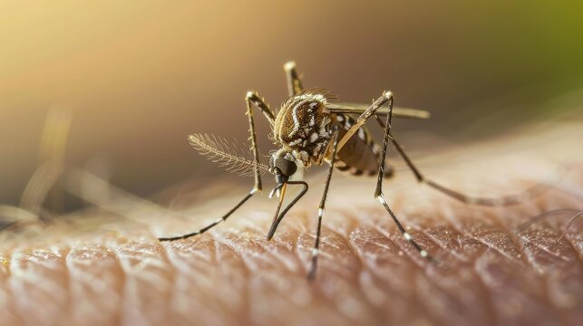

Baldes y recipientes
Vaciá, tapá o poné bajo techo todo recipiente que pueda juntar agua de lluvia.
El dengue, el zika y la chikungunya son enfermedades virales transmitidas principalmente por mosquitos infectados. Informarse ayuda a actuar a tiempo y a proteger a toda la familia.
El mosquito Aedes aegypti puede desarrollarse en pequeñas cantidades de agua quieta. Revisá estos lugares todas las semanas:
Vaciá, tapá o poné bajo techo todo recipiente que pueda juntar agua de lluvia.

Guardalos bajo techo o perforalos para evitar que acumulen agua.

Vaciá los platos y cepillá los recipientes para remover huevos adheridos.
Los síntomas pueden variar. Ante fiebre u otras molestias, consultá a un centro de salud y evitá automedicarte.

Puede causar fiebre, dolor de cabeza, dolor detrás de los ojos y dolores musculares o articulares.

Puede presentarse con fiebre, sarpullido, conjuntivitis y dolores musculares o articulares.

Se caracteriza principalmente por fiebre y dolor articular intenso.
Fiebre, dolor de cabeza, dolor detrás de los ojos y malestar general.
Fiebre leve, sarpullido, conjuntivitis y dolor muscular o articular.
Fiebre y dolor articular intenso que puede durar varios días.
Eliminá el agua de recipientes.
Cepillá bebederos y platos.
Usá repelente y ropa larga.
Cubrí tanques y reservorios.